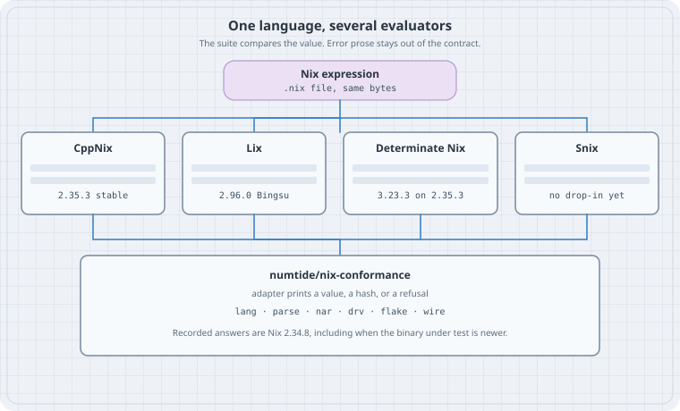

One language, several evaluators
One language, several evaluators
Goal: Name the Nix implementations you can actually pin in 2026, see where they diverge (builtins, string context, float printing, error text, flakes), and test a portable expression against more than one of them with a shared conformance suite.
This writing box has no nix binary and this chapter installs nothing. Every expected value below is copied from a file that was read: upstream tests/functional/lang/ at Nix tags 2.34.8 and 2.35.3, or lang/ / flake/ in numtide/nix-conformance. The command line is the one those repositories’ runners use. Re-run the files on a host before you treat a diff as yours.
Version note, re-checked 2026-10-17:
| Implementation | What it is | Version you can cite today |
|---|---|---|
CppNix (upstream Nix, NixOS/nix) |
The C++ evaluator the language still follows | Tag 2.35.3, annotated 2026-10-13. The file .version at that tag is the string 2.35.3. |
| Lix | Community fork of Nix (C++ with a growing Rust portion) | 2.96.0 “Bingsu”, announced 2026-10-13. The same day’s security fixes are also in 2.94.3 and 2.95.4. |
| Determinate Nix | A distribution of upstream Nix with extra product surface | 3.23.3 (2026-10-16), release notes: “Based on upstream Nix 2.35.3.” |
| Snix (formerly Tvix) | Rust reimplementation, library-first | No stable release tag on snix.dev. The project says it is early and not a drop-in nix binary. |
Two package-set aliases are easy to misread. On nixpkgs branch nixos-26.05, pkgs/tools/package-management/nix/default.nix sets nixVersions.nix_2_35 to 2.35.3 and nixVersions.latest to that package, while nixVersions.stable is still nix_2_34 at 2.34.9. The same branch’s lix/default.nix sets lixPackageSets.lix_2_94 to 2.94.3, lix_2_95 to 2.95.4, stable to 2.94, and latest to 2.95. On nixpkgs master (read the same day) lixPackageSets.lix_2_96 is 2.96.0, and latest / stable still alias lix_2_95 at 2.95.4. Pin the numbered attribute.
Partial cousins, so they stay out of the table: hnix is a Haskell parser and evaluator (repository pushed 2026-03-17) whose own README still shells out to nix-shell and nix-store. nix-community/go-nix is Go libraries for NAR and store paths (pushed 2026-03-02), not an evaluator. A different language that happens to be declarative is a different chapter.
Thesis
There is one Nix language in the files you commit, and several programs that claim to evaluate them. A shared suite matters because the language is still “what one C++ binary prints,” and that binary is no longer the only one your CI might install.
Mental model

Snix’s own eval notes say the quiet part: in the absence of a language standard, what the language is is prescribed by the behaviour of the C++ implementation. CppNix, Lix, and Determinate Nix are three builds of that lineage (Lix forked; Determinate tracks upstream and adds features). Snix is a bytecode interpreter written to agree with nixpkgs, and it documents the C++ corners it does not want to copy.
The practical standard, as of October 2026, is a test suite rather than an RFC. numtide/nix-conformance (created 2026-10-08, last push 2026-10-12, LGPL-2.1-or-later) records answers from Nix 2.34.8. Its README and flake.nix description both say so. Current stable CppNix is 2.35.3. The suite is the contract for “same as 2.34.8,” and a newer binary is something you run through the suite to see drift. It is not, by itself, a proof that 2.35.3 and 2.34.8 agree.
An implementation joins by shipping one adapter program. The runner calls ADAPTER OP FILE with NIX_PATH=lang/dir3:lang/dir4, NIX_CONFIG="experimental-features = nix-command flakes", HOME=/fake-home, and TEST_VAR=foo. Exit code 3 means “this implementation does not do that op,” and the case is skipped. The reference adapter (adapters/nix) is bash: parse, nar, drv, and wire exec oracles linked against that Nix, and a missing oracle is a skip; eval is nix-instantiate --eval --strict --read-write-mode inside a throwaway local?root= store. The dummy store is refused for evaluation on purpose (nix-bugs/dummy-store in the suite): a drvPath’s string context would not carry the real closure.
| Op | Pass condition, from SPEC.md |
|---|---|
eval on eval-okay-* |
Strict printout equals the .exp file |
eval on eval-fail-* |
Non-zero exit. The .err.exp text is Nix’s and is not compared |
parse |
ok TREE or error LINE:COL. The message is not part of the answer |
flake |
JSON of output result, or failure for fail-*. The message is not compared |
nar, drv, wire |
A hash line, a store path, or error — facts, not sentences |
Upstream’s own runner is stricter about prose. tests/functional/lang.sh at tag 2.35.3 diffs stderr of every eval-fail-*.nix against lang/<name>.err.exp. That file is a characterisation of CppNix’s wording. Copying it into a cross-implementation CI tests the sentence, which Lix and Snix are free to change and which the shared suite deliberately ignores (COVERAGE.md: “A case tests what is specified, not how Nix words it”).
Counts from a full git tree listing on 2026-10-17 (truncated: false):
| Tree | eval-okay-*.nix |
eval-fail-*.nix |
all *.nix under the lang tests |
|---|---|---|---|
NixOS/nix tag 2.34.8, tests/functional/lang |
143 | 109 | 322 |
NixOS/nix tag 2.35.3, same path |
144 | 269 | 483 |
numtide/nix-conformance lang/ |
532 | 274 | 893 |
The suite is larger than the 2.34.8 tree because it adds cases (string context, derivation output paths, regex and fromTOML corpora, float-range). Tag 2.35.3 grew a large pile of eval-fail files that a suite pinned to 2.34.8 does not automatically absorb. lib.adapterFor exists so a newer Nix can be run as one more implementation before those answers are promoted.
Worked examples
Case 1 — Addition, and the float that prints like an int
Upstream file tests/functional/lang/eval-okay-builtins-add.nix. The blob is identical at tags 2.34.8 and 2.35.3 (git blob f678f640f129d966dc308fece3fe622882dcc667) and the suite carries the same .exp (blob 0350b518a7ec2e41eb48e82bfd99b34685a10d95).
# eval-okay-builtins-add.nix
# Source: NixOS/nix tests/functional/lang/eval-okay-builtins-add.nix
# tags 2.34.8 and 2.35.3, and numtide/nix-conformance lang/
# Not run here (no nix). Upstream command, from tests/functional/lang.sh:
# nix-instantiate --eval --strict lang/eval-okay-builtins-add.nix
[
(builtins.add 2 3)
(builtins.add 2 2)
(builtins.typeOf (builtins.add 2 2))
("t" + "t")
(builtins.typeOf (builtins.add 2.0 2))
(builtins.add 2.0 2)
]Expected stdout, from eval-okay-builtins-add.exp (same blob at both tags and in the suite):
[ 5 4 "int" "tt" "float" 4 ]builtins.add 2.0 2 has type "float" and prints as 4. That is the printer, not a cast back to int. In tag 2.35.3, using NixFloat = double (src/libexpr/include/nix/expr/value.hh) and printFloat does output << v.fpoint() with no precision set (src/libexpr/print.cc). Default iostream formatting of a double is what .exp locks.
The same printer shows up in assertion text, which the shared suite does not lock. assertEqValues formats a mismatch as "%s with value '%s'" through ValuePrinter (src/libexpr/eval.cc). showType of a float is "a float". So CppNix’s own eval-fail-assert-equal-floats.err.exp at tag 2.35.3 ends with:
error: a float with value '1' is not equal to a float with value '1.01'for the expression assert { b = 1.0; } == { b = 1.01; };. The left-hand 1.0 is rendered as 1. A second evaluator that prints 1.0 or 1.000000 still implements == if the assertion fails. It fails the upstream characterisation diff, and it passes nix-conformance.
Case 2 — Ordinary float arithmetic, then the extreme range
tests/functional/lang/eval-okay-float.nix, same .exp blob at 2.34.8 and 2.35.3 (3c50a8adce861f615611328de1c01fdd6e6680ae).
# eval-okay-float.nix
# Source: NixOS/nix tests/functional/lang/eval-okay-float.nix (tags 2.34.8 and 2.35.3)
# Not run here. Command:
# nix-instantiate --eval --strict lang/eval-okay-float.nix
[
(1.1 + 2.3)
(builtins.add (0.5 + 0.5) (2.0 + 0.5))
((0.5 + 0.5) * (2.0 + 0.5))
((1.5 + 1.5) / (0.5 * 4.0))
]Expected stdout, from eval-okay-float.exp:
[ 3.4 3.5 2.5 1.5 ]The suite adds a case upstream 2.35.3 does not have (lang/eval-okay-float-range.nix is absent from that tag). The .exp is Nix 2.34.8’s printout, per the suite README:
# eval-okay-float-range.nix
# Source: numtide/nix-conformance lang/eval-okay-float-range.nix
# Not in NixOS/nix tests/functional/lang at tag 2.35.3.
# Not run here. The suite's eval op is:
# nix-instantiate --eval --strict --read-write-mode lang/eval-okay-float-range.nix
[ 2.2250738585072014e-308 0.0 0.0e-400 0.0e5 1.7976931348623157e308 1.5 ]Expected stdout, from lang/eval-okay-float-range.exp:
[ 2.22507e-308 0 0 0 1.79769e+308 1.5 ]The recorded line keeps six digits (2.22507e-308, 1.79769e+308), prints 0.0 as 0, and underflows 0.0e-400 to 0. printFloat sets no precision, so this spelling is the stream default, not a format string in Nix. Rust’s default Display for f64, Python repr, and a printf("%.16g") dump of the same IEEE bits do not match this line. Parse trees in the suite are stricter than this printer: SPEC.md records a float literal as IEEE-754 bits, so 1.5 is (float 3ff8000000000000). Evaluation output and parse output are different contracts. A portable expression does not put the rendered form of a float into a derivation name, a lock, or a golden file unless that file was produced by the evaluator you pin.
Case 3 — eval-fail means “refuse”, and |> is still experimental
# eval-fail-abort.nix
# Source: NixOS/nix tests/functional/lang/eval-fail-abort.nix
# same file at tags 2.34.8 and 2.35.3. Not run here.
# Upstream: nix-instantiate --eval --strict --show-trace lang/eval-fail-abort.nix
# must exit non-zero. Conformance compares the exit status only.
if true then abort "this should fail" else 1CppNix’s characterised stderr (eval-fail-abort.err.exp, same blob at both tags) begins error: and contains evaluation aborted with the following error message: 'this should fail'. Quote it when you are debugging CppNix. Do not paste it into a test that Lix or Snix must satisfy.
Pipe operators are the syntax trap. Tag 2.35.3 still ships this as a failing test, and src/libutil/experimental-features.cc describes the feature pipe-operators as “Add |> and <| operators to the Nix language.”
# eval-fail-pipe-operators.nix
# Source: NixOS/nix tests/functional/lang/eval-fail-pipe-operators.nix at tag 2.35.3
# Not run here.
# nix-instantiate --eval --strict --show-trace lang/eval-fail-pipe-operators.nix
1 |> 2The characterised CppNix message at that tag is:
error: experimental Nix feature 'pipe-operators' is disabled; add '--extra-experimental-features pipe-operators' to enable itLix’s stable manual still marks |> and <| experimental, and the flag it documents is --extra-experimental-features pipe-operator (the feature id on that page is pipe-operator). CppNix 2.35.3’s table and its error text use the plural id pipe-operators. The conformance runner’s NIX_CONFIG turns on nix-command and flakes only, so 1 |> 2 stays an eval-fail for the reference. The portable spelling is function application, or lib.pipe from nixpkgs, which is a function and needs no language flag.
Case 4 — String context is part of the value
A Nix string can carry a context: store paths that must exist when the string is interpolated into a derivation. Drop the context and the build sandbox, or a later garbage collection, sees a missing input. The suite’s lang/eval-okay-context-introspection.nix builds a two-output derivation, interpolates its drvPath and outPath together with a path, and checks the eta rule getContext / appendContext / unsafeDiscardStringContext. Expected stdout, from lang/eval-okay-context-introspection.exp:
[ true true true true true true true true true true true true true ]SPEC.md says those eval-okay-context-* and eval-okay-drv-* cases use system x86_64-linux and a real local store, so the paths in the answer are stable across hosts. An implementation with no store can still be skipped (exit 3). It cannot honestly print true for this file.
Snix’s builtins table (page “Builtins”, article:modified_time 2025-12-24) marks derivation / derivationStrict / the fetchers / toFile / storePath as blocked on the store, and placeholder as blocked on context. getContext and hasContext are listed without a blocker on that snapshot. The companion note “Build references in derivations” describes C++ string context as the mechanism Snix still has to line up, and “Nix Language Issues” says Snix targets nixpkgs compatibility and can ignore edges nixpkgs does not hit. Treat that table as the published snapshot from December 2025, not as a census of git.snix.dev on the day you read this. The way you find out today’s gap is --known, below.
builtins.readFile feeding arbitrary file bytes into a Nix string is a separate, already-sharp edge of the same string type. Keep large and binary files on the path side of that choice.
Case 5 — A flake the suite can check without the network
Flakes are on in the runner’s NIX_CONFIG, and they are still an experimental feature of CppNix. The suite does not fetch. flake/okay-follows-root/flake.nix:
# flake/okay-follows-root/flake.nix
# Source: numtide/nix-conformance flake/okay-follows-root/flake.nix
# Not run here. Adapter command (adapters/nix):
# nix eval --json --no-update-lock-file path:<dir>#result
{
inputs.B.url = "path:./B";
inputs.B.inputs.top.follows = "";
outputs = { B, ... }: { name = "root"; result = [ B.inputs.top.name ]; };
}Expected stdout, from flake/okay-follows-root.exp:
["root"]fail-* flake directories must fail. The message is not compared. A lock the reference would have to rewrite is a failure: the implementation must not lock again and must not fetch. Determinate Nix adds flake schemas and builtins.wasm on top of this surface; those are product extensions. A flake that must evaluate on upstream Nix 2.35.3 stays off both. Snix’s December 2025 builtins table still lists fetchTree as todo, which is the builtin flakes evaluation sits on. Snix is not a second flake client you can drop into CI yet.
How to write a portable expression
Stay inside the intersection the suite can already see:
- Integer arithmetic, strings, lists, attrsets,
let,if,assert, ordinary calls. Case 1’s first three elements are the shape. Their printout[ 5 4 "int" … ]is stable from 2.34.8 through 2.35.3. - No experimental syntax.
|>and<|needpipe-operatorson CppNix 2.35.3 andpipe-operatoron current Lix. Writeg (f x)orlib.pipe. - No implementation-only builtins.
builtins.wasmis Determinate Nix. A module shared with stock Nix and with Lix does not call it. - Do not branch on
builtins.nixVersionto paper over a real difference. Versions differ on purpose across this table. A branch that is load-bearing belongs in the conformance--knownlist, with a deletion condition. - Floats are
double, and their spelling is not portable. Compare them inside the expression if you must (builtins.absis not the tool; subtract and bound), or keep the golden file next to one pinned evaluator. Do not splice a printed float into a store name. - Context-bearing strings and derivations need a store and a system. The suite fixes
x86_64-linuxfor those cases. A pure function of integers does not. - Assert outcomes, not paragraphs.
abortandthrowmust fire. The trace layout is CppNix’s.
# portable-sum.nix
# The integer half of eval-okay-builtins-add.nix, inlined so it has no import.
# Not run here. Same command as that upstream file:
# nix-instantiate --eval --strict portable-sum.nix
# Expected pieces, taken from eval-okay-builtins-add.exp (not a separate run):
# builtins.add 2 3 → 5
# builtins.add 2 2 → 4
# typeOf (builtins.add 2 2) → "int"
let
total = builtins.add (builtins.add 2 3) (builtins.add 2 2);
in
{
total = total;
kind = builtins.typeOf total;
}The file above is a rearrangement, so it has no .exp of its own. The three facts it relies on are the ones in eval-okay-builtins-add.exp. On a machine with Nix, the strict value of this rearrangement is what you record, and you record it from that machine.
Pinning more than one evaluator
The suite’s flake.nix (read from main on 2026-10-17) exposes the check. It only defines x86_64-linux and aarch64-linux. The nixpkgs input is pinned (github:NixOS/nixpkgs/ef34387ddd751e1ab8857adf4676492d32eb24ec); packages.adapter is built from that pin’s pkgs.nix, which the suite treats as 2.34.8. lib.${system}.adapterFor nix rebuilds the adapter and the oracles against another Nix. An oracle that does not compile against that Nix’s API is omitted and its op is skipped.
# ci-conformance.nix
# Shape copied from numtide/nix-conformance flake.nix and README.
# Not instantiated here: no nix binary on this box.
{
inputs.nix-conformance.url = "github:numtide/nix-conformance";
outputs = { self, nix-conformance, ... }:
let
system = "x86_64-linux";
lib = nix-conformance.lib.${system};
in
{
checks.${system} = {
# A binary you built. Exit 3 skips an op. --known lists accepted gaps.
conformance = lib.check {
name = "my-implementation";
adapter = "${self.packages.${system}.my-adapter}/bin/my-adapter";
flags = [ "--known" "${./known-failures}" ];
};
};
};
}known-failures is one repo-relative path per line. A listed failure counts as known. A listed case that starts passing counts as a failure, so the list cannot rot in silence.
To put a second upstream Nix through the same answers, the README’s command uses the suite’s nixpkgs, not whatever nixVersions your 26.05 lock happens to have:
# Documented in numtide/nix-conformance README.md. Not run here.
nix build --impure --expr 'let f = builtins.getFlake "github:numtide/nix-conformance";
p = f.inputs.nixpkgs.legacyPackages.x86_64-linux;
in f.lib.x86_64-linux.adapterFor p.nixVersions.git'
nix run github:numtide/nix-conformance -- result/bin/* drvWhat that gives you, if the oracle build succeeds:
Binary you pass to adapterFor |
What the adapter actually executes |
|---|---|
A nix that still looks like CppNix’s CLI (nix-instantiate, nix eval) |
eval, eval-xml, check, and flake |
Headers the suite’s oracle/ still compiles against |
parse, nar, drv, wire as well |
| Anything else | Those ops exit 3 and show up as skips |
Lix installs a nix CLI, so the nix-instantiate ops are the ones a Lix package can answer without an oracle rebuild. Whether current Lix 2.96 headers still satisfy oracle/ was not compiled here. Determinate Nix 3.23.3 is a nix CLI on top of 2.35.3; extra builtins do not show up unless a case calls them. Snix needs its own adapter: there is no nix-instantiate to wrap. Start it with exit 3 on drv / wire / flake, and a --known file for the language cases the December 2025 builtins table still marks todo, store, or context.
A smaller CI, when you only have two CLIs and you do not want the oracles, is the upstream loop from lang.sh with the conformance rule for failures: diff stdout of eval-okay-*.nix against the .exp, and require non-zero for eval-fail-*.nix without diffing .err.exp. Vendor the files you mean. Point each matrix leg at a numbered package (nixVersions.nix_2_35, lixPackageSets.lix_2_96), not at stable.
The October 2026 security advisory fixed Nix 2.35.3 (also 2.34.9, 2.31.6, 2.30.6, 2.28.8) and Lix 2.96.0, 2.95.4, and 2.94.3. A conformance pin is not a reason to stay on an unfixed evaluator. Run the suite on the patched build.
The trap
Treating “it evaluates on my laptop” as the language. The laptop has one binary, one experimental-features line, and one iostream. The next job installs Lix, or Determinate Nix with flakes already on, or a Snix REPL, and a golden file full of error paragraphs and 1.0 rendered as 1 goes red for a reason that is not a behaviour change.
| Trap | What to pin instead |
|---|---|
nixVersions.stable on nixos-26.05 |
That alias is 2.34.9. Upstream’s current release is 2.35.3 (nixVersions.nix_2_35). |
lixPackageSets.latest |
On nixpkgs master this was still 2.95.4 after 2.96.0 existed as lix_2_96. |
Diffing .err.exp across implementations |
Upstream lang.sh does this for CppNix. The shared suite does not. |
|> in a shared module |
Experimental on CppNix 2.35.3 and on Lix. It fails the reference suite. |
builtins.wasm or a custom flake schema in a portable flake |
Determinate Nix surface. Stock Nix 2.35.3 will not grow it because your CI image did. |
| Assuming Snix matches because the pure subset feels small | Store builtins and string context are the nixpkgs-sized gap. Use --known. |
The boring rule
One expression, one .exp, one numbered evaluator per CI leg. Failures are exit codes. Sentences are logs. The oracle in the shared suite stays Nix 2.34.8 until that repository says otherwise; your production pin can still be 2.35.3 or Lix 2.96.0, and adapterFor is how you see the difference before users do.
Try this
On a machine that actually has Nix (this one does not):
- Check out tag
2.35.3ofNixOS/nixand run the two commands in cases 1 and 2. Diff stdout against the.expfiles. Then runeval-fail-pipe-operators.nixand confirm a non-zero exit with the feature left off. - Clone
numtide/nix-conformanceand readadapters/nixnext to oneeval-okay-context-*.nix. Note the scratch store. That is why a context test is notnix-instantiate --evalagainstdummy://. - Add five lines to
known-failureson purpose, run with--known, then delete one line and watch that case turn red. The list is part of the contract. - In your own flake, replace any
nixVersions.stableinput with the numbered attribute you meant, and write the version string into the CI log.
Sources
- NixOS/nix tag 2.35.3 —
.version, annotated tag date 2026-10-13. Also tag 2.34.8 (2026-07-06), the suite’s oracle. - NixOS/nix
tests/functional/lang.shat 2.35.3 —eval-okaydiffs.expand.err.exp;eval-faildiffs.err.exp. - Test files quoted above, same blobs at 2.34.8 and 2.35.3 unless noted:
tests/functional/lang/eval-okay-builtins-add.nix,eval-okay-float.nix,eval-fail-abort.nix,eval-fail-pipe-operators.nix,eval-fail-assert-equal-floats.err.exp. - Printer and types at tag 2.35.3:
src/libexpr/print.cc(printFloat),src/libexpr/include/nix/expr/value.hh(NixFloat = double),src/libexpr/eval.cc(assertEqValues,showType),src/libutil/experimental-features.cc(pipe-operators). - numtide/nix-conformance —
README.md,SPEC.md,COVERAGE.md,flake.nix,adapters/nix,lang/eval-okay-float-range.nix,lang/eval-okay-context-introspection.nix,flake/okay-follows-root/. - Lix 2.96 “Bingsu” and the operators manual (pipe operators still experimental).
- Determinate Nix 3.23.3 release notes — based on upstream Nix 2.35.3, 2026-10-16.
- Snix about, builtins status, Nix language issues, string context. Rename announcement: Announcing Snix (2025-03-16).
- nixpkgs
nixos-26.05:pkgs/tools/package-management/nix/default.nix,pkgs/tools/package-management/lix/default.nix. nixpkgsmaster:lix/2.96.nix(version = "2.96.0") and thelatest/stablealiases inlix/default.nix. - Security advisory for Nix and Lix, October 2026 — patched Nix 2.35.3 and Lix 2.94.3 / 2.95.4 / 2.96.0.
- hnix, go-nix — partial, not drop-in evaluators.